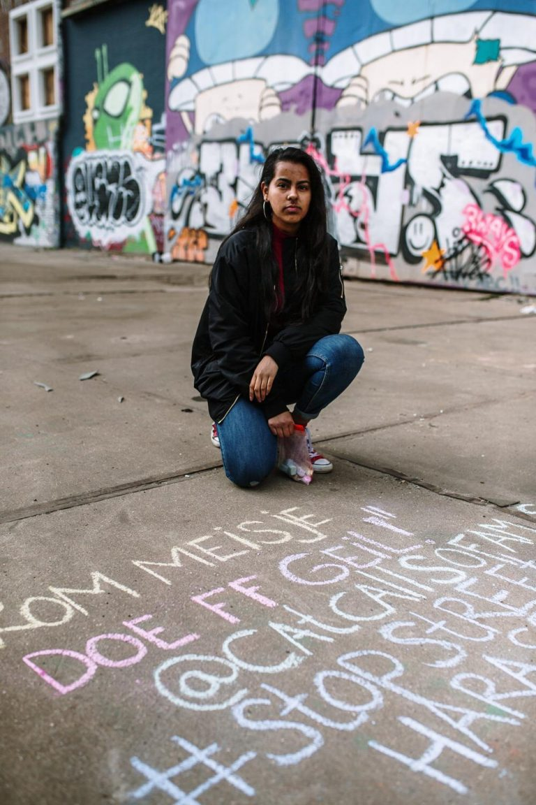

“Da quando ho iniziato Cat Calls of Amsterdam ho sviluppato questo sesto senso: ogni volta che qualcuno sta per fischiare a me oppure a una mia amica, c’è un radar dentro di me che si attiva”, dice Ambrien Moenrialam, fondatrice dell’account Instagram Cat Calls of Amsterdam. Insieme a un team di tre donne, Ambrien ha deciso di combattere il sessismo in modo originale: raccoglie messaggi che le persone le inviano con le loro esperienze di “Cat Calling”, visita il luogo in cui è successo e scrive in terra, con gessetti colorati, quelle frasi, spesso impronunciabili, pronunciate all’indirizzo di ragazze e donne. L’obiettivo? Sperare che il progetto aumenti la consapevolezza del problema. “Sono diventata più consapevole, ma sento anche di aver preso in mano la situazione perché quando cammino per la città mi sembra di aver ripreso un pezzo di Amsterdam.” Ambrien tiene a precisare che non è solo per lei ma per tutte coloro che soffrono quotidianamente queste micro aggressioni. “Allo stesso tempo vogliamo educare le persone, coloro che non capiscono quanto possa intimorire il Cat Calling “, dice l’attivista a PanDam.
Ambrien ha scoperto il femminismo all’età di 14 anni attraverso sua sorella e tramite Instagram: “Non so come descrivere il mio femminismo, per me è solo un sentimento di solidarietà, empowerment e bisogno di giustizia”, prosegue. Poi all’età di 15 anni, si è imbattuta nel sito Instagram Cat Calls of New York City: “Ricordo di aver visto questa bellissima immagine con colori vivaci su un marciapiede. E la prima cosa che ho davvero pensato” oh, è davvero bella, è street art “, ma poi ho letto quello che c’era scritto; parlava di una ragazza di 12 anni, penso fosse qualcosa come “quando sarai abbastanza grande… “, o cose del genere e faceva allusioni alle sue parti del corpo. “Dopo una rapida ricerca, Ambrien ha scoperto che non esisteva ancora tale iniziativa ad Amsterdam, quindi ha preso la questione in mano e ha deciso di attivarsi.
I primi messaggi che Ambrien ha disegnato per le strade di Amsterdam furono le esperienze di Cat Calling di familiari e amiche. Dopo un’intervista con la BBC, il sito Instagram è diventato più popolare e il numero di follower è cresciuto alle stelle. Molti dei messaggi che Ambrien riceve parlano di episodi di Cat Calling che avvengono nel centro di Amsterdam, a Piazza Dam, Nieuwmarkt e nei pressi della Stazione Centrale. In molti casi, gli autori sono turisti: “Mi arrabbio molto perché sei ospite in questo paese, quindi davvero non dovresti farlo.”
Dall’inizio di Catcalls of Amsterdam diversi account Instagram simili sono stati lanciati in tutti i Paesi Bassi: L’Aia, Groningen, Rotterdam, ogni città ha un suo profilo dedicato. “Ora abbiamo un account in quasi tutte le grandi province o città e penso che la popolarità dell’iniziativa sia stato in parte dovuto a Catcalls of Amsterdam“. Il governo olandese ha recentemente adottato misure più rigide per affrontare le molestie sessuali. Un esempio è la recente campagna #yourenotalone. Ambrien dice di essere stata un po ‘delusa dalla campagna, perché, pensa, la colpa è sempre delle vittime, delle donne “Penso che l’attenzione dovrebbe piuttosto essere rivolta agli uomini. Perché non facciamo invece una campagna #talkwithyourmates? “
Per Ambrien, il passo più importante per combattere il Cat Calling è l’educazione sessuale nelle scuole, perché la cultura dello stupro e il Cat Calling “non sono questioni di cui si parla molto a casa. Non credo che i genitori dicano esplicitamente ai loro figli: non puoi dire questo o quello a una donna”. In particolare, per Ambrien è importante sensibilizzare su quanto sia dannoso e sbagliato il Cat Calling.” Vorrei sedermi in una stanza con uomini che approcciano le donne in questo modo, vorrei parlare per loro, vorrei vedere il modo in cui pensano; perché lo fanno. Voglio sapere cosa succede nella loro mente; capirlo meglio, adattare il progetto in modo efficace, affinchè affronti le persone giuste e aiuti a risolvere il problema. Il messaggio di Ambrien al governo olandese e alla sindaca di Amsterdam nella prospettiva di future campagne di sensibilizzazione è che “l’unico modo di compiere effettivamente progressi in questo campo è includere le persone che hanno subito queste micro aggressioni”.
Insieme al suo team, Ambrien, sta attualmente pianificando alcuni eventi pubblici, tra i quali, uno ad NDSM il 19 aprile 2020 ed è coinvolta con l’organizzazione di Women’s March. Ogni messaggio che Ambrien riceve rimane con lei: “Ho dovuto imparare a distanziarmi emotivamente ai dai messaggi che ricevo. Ogni volta che ne ricevo uno rimango sotto shock: arrabbiata, triste, ferita per quella persona.” Alcuni di quei messaggi non li dimenticherò mai; per esempio una donna disabile ci ha contattato una volta dicendo che qualcuno le aveva detto a Piazza Dam: “se hai così tanta forza per tirarti su, puoi sicuramente masturbarmi alla grande”.